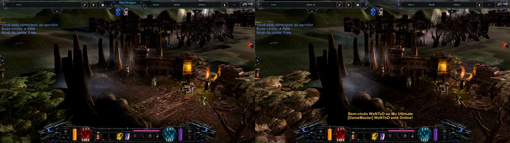
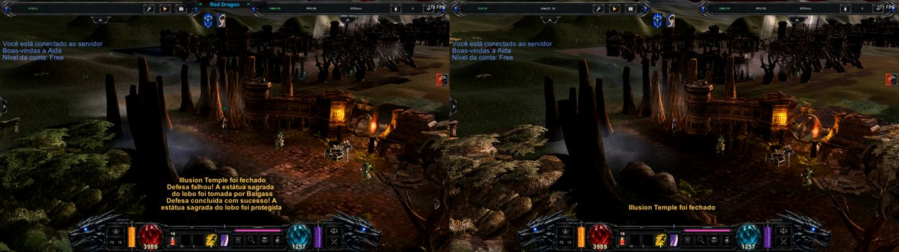
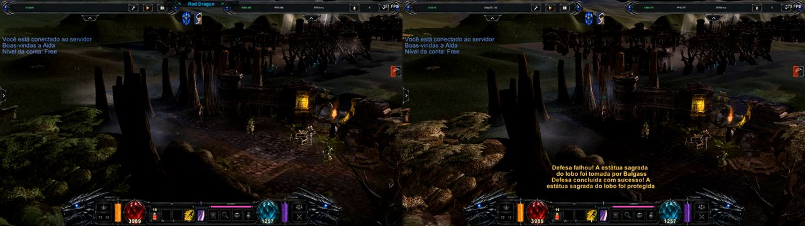
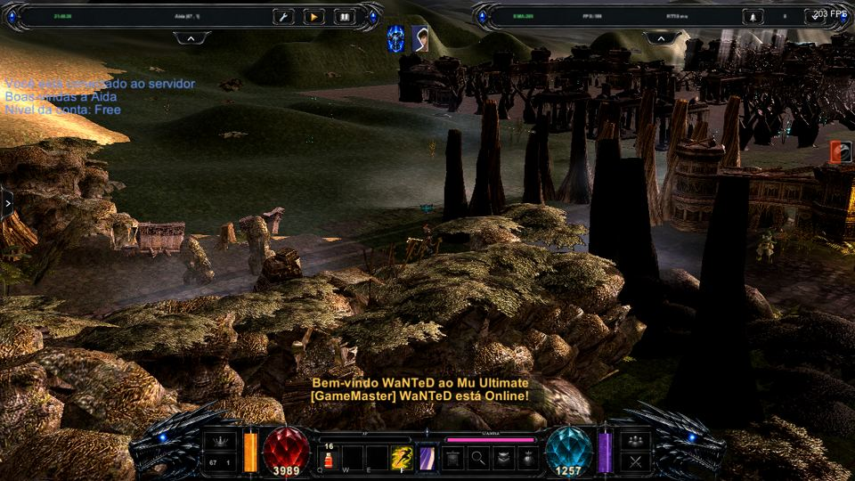
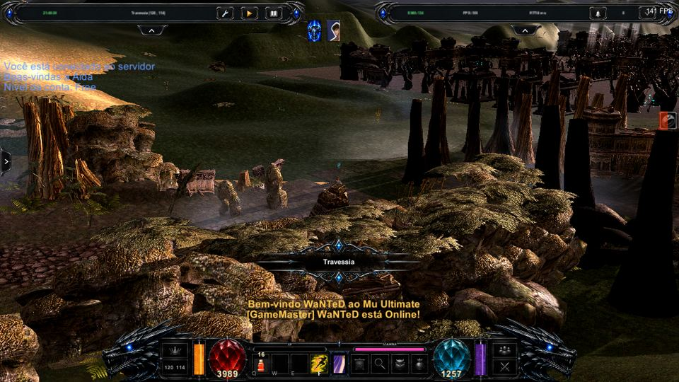
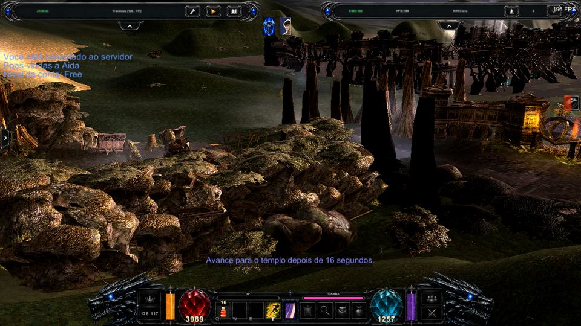
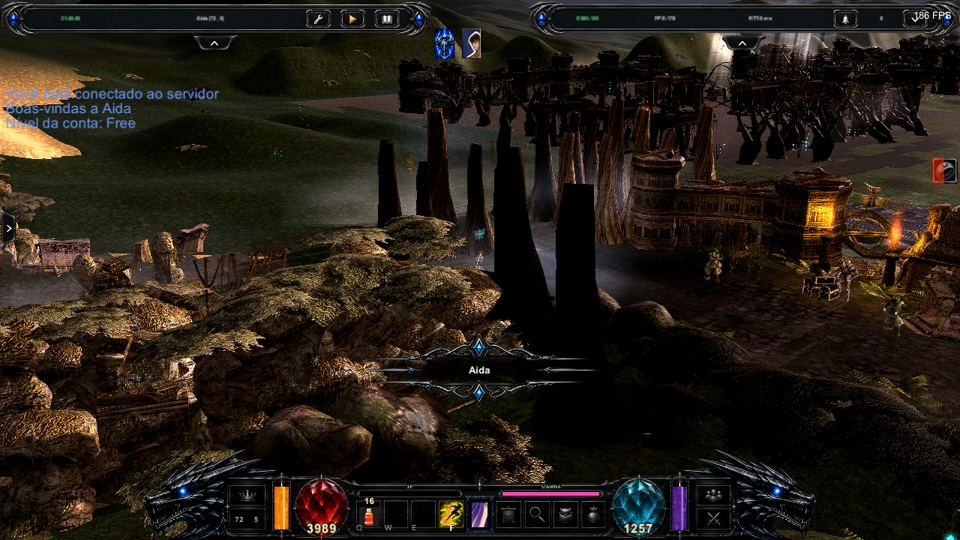
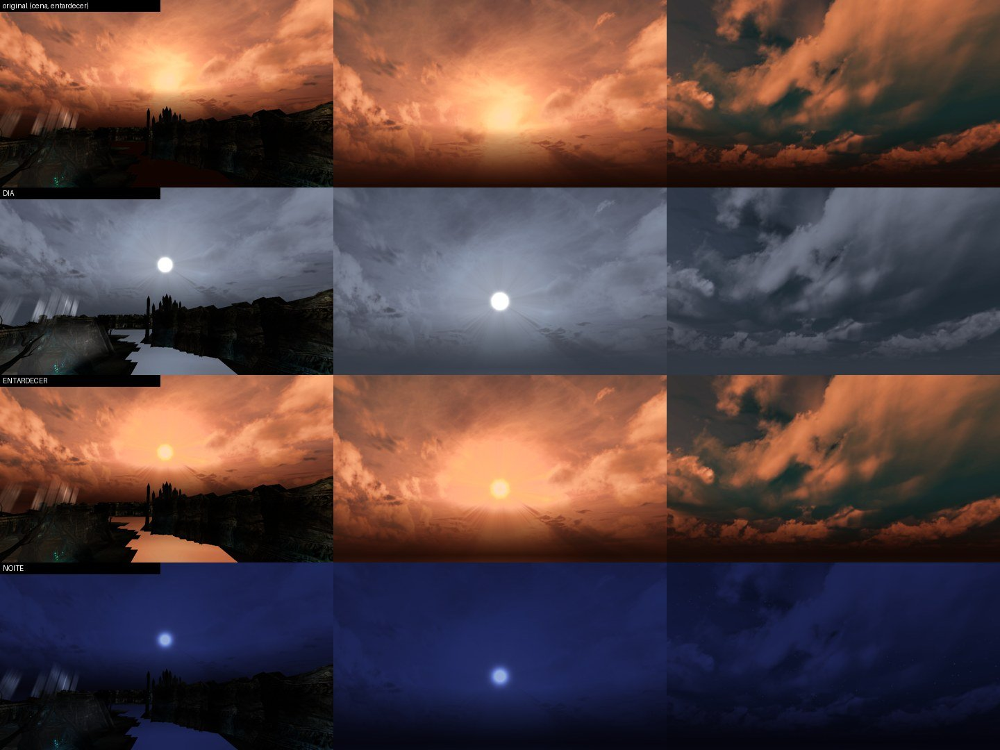

Aida no motor do mundo (R2246)
26/11, noite. Build r1166. A Aida deixa de ser uma cena separada: é desenhada pelo mesmo motor da estrada, e a borda vira só um número para o servidor.
| Antes (cena do Mega) | Agora (motor do mundo) | |
|---|---|---|
| Travada na borda | 71–123 ms | até 21 ms (normal) |
| O que troca na borda | sol, tom do chão, céu, luz da cena | nada |
| Salto de brilho na troca | até 126% | −2,5% a +7%, dentro da variação normal andando |
| Cidade por dentro | referência | mesmas construções, luzes e névoa; brilho 1,05× (dia), 1,01× (entardecer), 1,15× (noite) |
Ainda falta: chão sem a sombra do sol e um pouco menos avermelhado; alguns arbustos mais pálidos; noite 15% mais clara; morros em volta mais claros; céu final não conferido; ao entrar direto (login/teleporte) aparece o chão antigo por meio segundo. Não testado ainda: combate, NPCs, montaria, carroça, portais internos, minimapa.
Dentro da cidade: original (esquerda) × convertida (direita)



Na borda (convertida)




Céu da Aida por modo (nuvens do Mega de volta)
